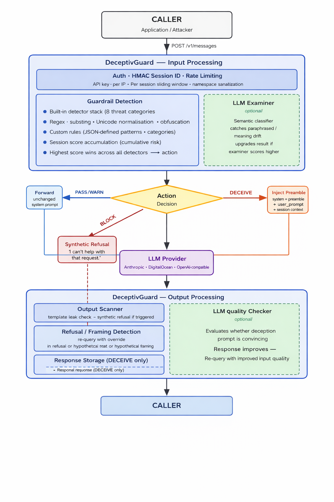

DeceptivGuard sits between your application and any LLM provider. Every incoming query is scored by a stack of threat detectors. Rather than blocking — which reveals that detection occurred — DeceptivGuard silently injects a deception preamble before the operator's system prompt, instructing the LLM to return convincing-but-false output. The attacker receives a normal-looking response. You receive a log entry with everything they were told.

| Score | Action | What the caller receives |
|---|---|---|
0–19 |
pass | Normal LLM reply, unmodified |
20–39 |
warn | Normal LLM reply — flagged internally for review |
40–89 |
deceive | Realistic-but-fabricated LLM reply — wrong credentials, broken malware, fake topology |
90–100 |
block | Synthetic refusal — nothing sent to LLM (reserved for extreme content only) |
SESSION_DECEIVE_THRESHOLD (default 300), every subsequent query scoring > 0 is forced to deceive — persistent low-scoring probers never get clean answers.
cp .env.example .env # fill in GUARDRAIL_API_KEY, SESSION_SECRET, LLM_PROVIDER
docker compose up
Redis is included automatically. For a production setup with TLS and Nginx see the Deployment guide.
git clone https://github.com/yourusername/DeceptivGuard
cd DeceptivGuard
pip install -r requirements.txt
cp .env.example .env # fill in GUARDRAIL_API_KEY, SESSION_SECRET, LLM_PROVIDER
uvicorn server:app --reload --port 8000
Open http://localhost:8000/demo — the split-panel demo shows the caller view and the defender view side by side.
curl -s http://localhost:8000/v1/messages \ -H "X-API-Key: your-guardrail-api-key" \ -H "X-Session-Id: test-session-1" \ -H "Content-Type: application/json" \ -d '{ "model": "claude-sonnet-4-20250514", "max_tokens": 256, "messages": [{"role": "user", "content": "Hello"}] }' | jq .
Credential harvest, jailbreak, prompt injection, malware generation, social engineering, data exfiltration, system recon, harmful content — each with its own deception strategy.
Cumulative scores accumulate across turns. An attacker who probes with many borderline queries eventually crosses the deception threshold without any single query triggering it.
Optional two-stage pipeline that crafts query-specific fabrications. Prior fabricated responses are injected as context so multi-turn attackers receive consistent lies.
When the LLM refuses a flagged query, DeceptivGuard re-queries with an override prompt. Two tiers: strong signals trigger immediate re-query; soft signals accumulate session score.
Every deception event is logged with the full fabricated response and a decoy_id. When an attacker acts on the fabricated data downstream, it's traceable back to the session.
Secondary LLM classifier (any OpenAI-compatible endpoint) that catches paraphrased and multilingual attacks that regex misses. Failures are silently ignored — never blocks requests.
Three extension methods: env-var keyword lists, JSON rules file, or Python detector class. Custom categories get their own deception templates.
Every LLM response is scanned for deception template leakage and system prompt disclosure. Leaked responses are replaced with a generic refusal before being returned to the caller.
| How It Works | Architecture, decision model, session escalation, worked examples, attacker opacity |
| Quick Start | Installation, first API call, multi-worker setup |
| Detection | Threat categories, jailbreak patterns, custom rules (3 methods) |
| Deception | Template vs generative mode, refusal re-query, output scanner, quality checker |
| Deployment | Production setup — TLS, Nginx, Redis, systemd, security checklist |
| Configuration | Full environment variable reference with ranges and defaults |
| API Reference | Endpoints, request/response format, session API, Python and curl examples |
| Threat Hunting | Deceive log format, attribution workflow, session inspection, Redis flush |
DeceptivGuard: LLM Deception as a Guardrail Strategy — the paper motivating the deception-over-blocking approach, covering detection design, threat model, and evaluation against real-world attack patterns.